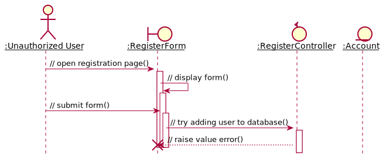

Security¶
Authentication¶
In order to protect the data from unauthorized users, we must first verify their identity, i.e., authenticate the users.
Register¶
To register for an account, the user should fill a form with personal information:
real name
username
password
the user’s role, which can be student, supervisor, or assistant
When user submits a form to register for an account, the register controller will check the database to see if the username exists. If the username does not exist, the controller will continue to create an account in the database. The password is stored in the database as a hash for security.
After the successful account creation, the user will be redirected to the home page.
![@startuml
hide footbox
autoactivate on
skinparam sequenceParticipant underline
actor ":Unauthorized User" as usr
boundary ":RegisterForm" as form
control ":RegisterController" as ctl
entity ":Account" as acc
usr -> form: // open registration page()
form -> form: // display form()
usr -> form: // submit form()
form -> ctl: // try adding user to database()
ctl -> acc: // check existing accounts()
ctl <-- acc: // return
ctl -> acc: // add user()
ctl <-- acc: //return
form <-- ctl !!: // redirect to home page()
deactivate form
deactivate form
@enduml](../../_images/plantuml-3265f00d93b9ca804bc8342d8e7e71982c74b2b3.svg)
Figure 9 Analysis sequence diagram for the basic flow of registration process¶
If the username or email is taken, the controller should inform so to the user.

Figure 10 Analysis sequence diagram for the alternative flow of the registration process where the mail is taken¶
![@startuml
hide footbox
autoactivate on
skinparam sequenceParticipant underline
actor ":Unauthorized User" as usr
boundary ":RegisterForm" as form
control ":RegisterController" as ctl
entity ":Account" as acc
usr -> form: // open registration page()
form -> form: // display form()
usr -> form: // submit form()
form -> ctl: // try adding user to database()
ctl -> acc: // check existing accounts()
ctl <-- acc: // return
ctl -> acc: // add account()
ctl <-- acc: // raise key error
form <-- ctl: // Inform that the username is taken()
deactivate form
@enduml](../../_images/plantuml-e166af8b851897edd6316cd9faf877da031c8da4.svg)
Figure 11 Analysis sequence diagram for the alternative flow of the registration process where the username is taken¶
Another exceptional flow happens when the user request an invalid role. This should not happen when the user submit the form via browser, but it can happen if someone is submitting it via a nonstandard way.

Figure 12 Analysis sequence diagram for the alternative flow of the registration process where the role is invalid¶
In order to prevent faking identity, we intended to require a token for registration. This token is provided by the system administrator and each person can only receive one token, so if they use it for faking identity, they cannot create their account anymore and have to suffer th consequence.
Alternatively, the administrator can remove the register endpoint and generate the accounts for each user.
However, we did not implement either of these schemes.
Log In¶
The user can log in to the site in the login endpoint. After submitting the form with their username and password, they should be logged in.

Figure 13 Analysis sequence diagram for the basic flow of login¶
However, if the user tries to log in with a non-existent account, the controller should raise an error and inform the user so.

Figure 14 Analysis sequence diagram for the alternative flow of login where there is no user with the username¶
If the user input wrong password, the user should also not be logged in and be informed of wrong password.

Figure 15 Analysis sequence diagram for the alternative flow of login where the¶
Authorization¶
After authenticated, the users are authorized according to their role and their identity. For example, a user with role “assistant” cannot participate in a project, or student cannots edit a projects they do not participate in.
Encrypted Connection¶
To protect the data sent through HTTP, we upgraded it to HTTPS by creating a TLS certificate on the server side. Furthermore, the server is configured to use secure cookies, that is, cookies that can only be sent via HTTPS.
Injection Attacks¶
XSS Attack¶
Jinja by default escapes all HTML tags. This means that if an attacker tries
to inject a script into the content, for example, setting project description
as <script>sendSensitiveData()</script>, the script tags would appear
as is and not parsed as a script element.
Moreover, the server is configured to use same-site and HTTP-only cookies, which renders any cookie-stealing JavaScript useless.